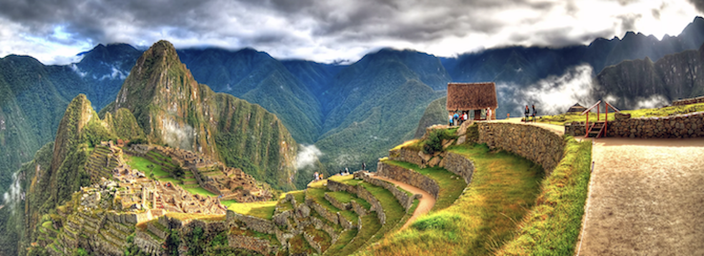
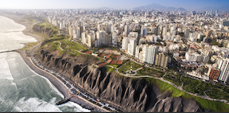
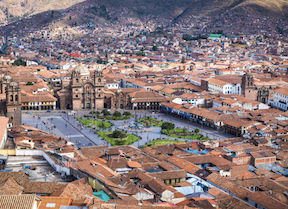

I spent 12 unforgettable days in Peru, and it truly felt like stepping into a dream. From the vibrant energy of Lima to the breathtaking landscapes of the Sacred Valley, every moment was filled with beauty and wonder. Visiting Machu Picchu was absolutely surreal—the mist, the mountains, and the ancient ruins created a magical atmosphere I’ll never forget. Ending the journey in Cusco, with its rich history and charming streets, was the perfect way to take it all in. We were blessed with incredible weather and ate so much great food. Peru’s natural beauty and cultural depth left a lasting impression on me.

